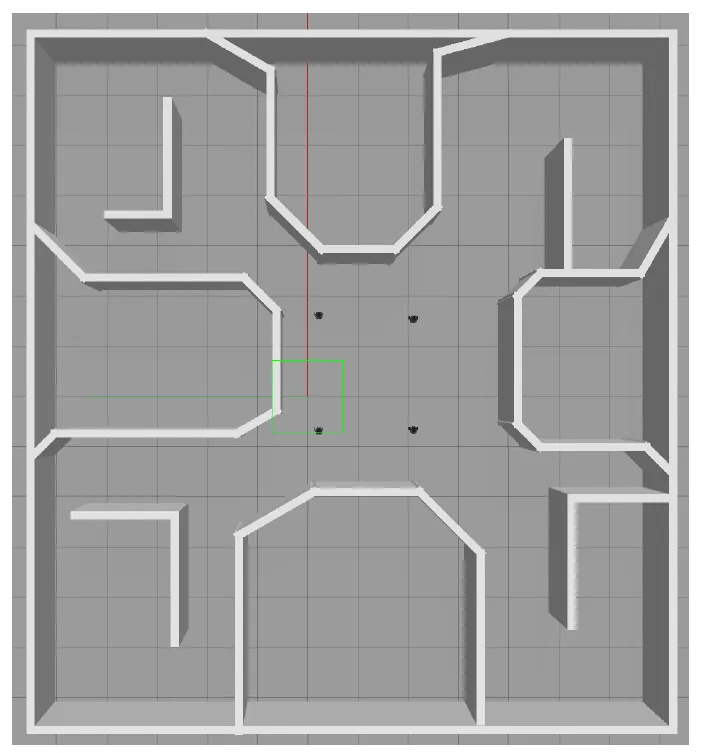
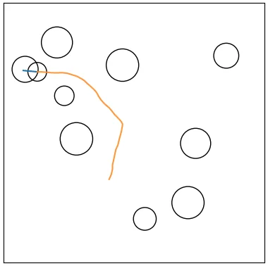
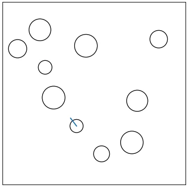

Multi-robot SLAM and reinforcement learning exploration
Where
ETRI, Visual Intelligence Lab
When
Jul – Aug 2023
Stack
ROS Melodic, Gazebo, RViz, C++, Python, Keras
Part of the MSIT national R&D project AI Bots collaboration platform and self-organizing AI; I'm listed as a participating researcher in the year-2 interim report (Dec 2023). I built a multi-robot exploration environment for four TurtleBot3 robots and trained DQN agents to explore it while SLAM built the map.
Map coverage in the same Gazebo world
Setup
Measured at
Coverage
DQN, 1 agent → 4 agents
5 minutes
~51% → ~94%
Single robot, DQN vs. RRT
10 minutes
~78% vs. ~64%

The Gazebo world, modeled on a prior multi-robot mapping study.RViz: four robots (red) growing RRT frontier trees over the merged map.
What I built
A ROS and Gazebo environment for four TurtleBot3s, with per-robot gmapping, move_base and map_merge under separate namespaces and TF trees.
Changes to the C++ global and local RRT frontier detectors and the Python filter and assigner nodes that hand out exploration goals.
A fix that let SLAM run during DQN training: sparse 15-degree LiDAR sampling caused “Scan matching failed” errors, so I expanded observations from 24 to 360 readings and the state from 28 to 364.
Keras DQN with experience replay, a target network and ε-greedy exploration, reward and goal design, and 3,000 training episodes. Each robot ran an independent agent while their maps merged online.
RViz views of robot pose, TF, LiDAR, frontiers and paths, two internal talks on ROS, SLAM and RL, and a final presentation on Aug 30, 2023.
Most of the difficulty sat in system setup, topics, TF and map merging, rather than in the learning algorithm. I now design the environment before the algorithm.
Rule-based reactive driving stalls as obstacles pile up. I trained a PPO policy on partial LiDAR observations and compared it against a rule-based baseline on two maps: easy with 8 obstacles, hard with 12.

PPO on the hard map: routes around the obstacles and reaches the goal.

Rule-based baseline on the same map: brakes and stalls.
Dynamics
Circular robot, unicycle model, continuous control (v, ω)
Observation
16 normalized LiDAR rays, goal position in the robot frame, heading error as sin and cos, previous action
Reward
Progress toward the goal, goal bonus, collision penalty, time penalty, penalty on excessive turning
Evaluation
250k timesteps; deterministic policy over 200 episodes with fixed seeds
Results over 200 evaluation episodes
Map
Policy
Success
Collision
Mean steps
Easy
PPO
90.0%
0.0%
61.9
Easy
Rule-based
0.5%
0.0%
248.8
Hard
PPO
86.5%
1.5%
65.9
Hard
Rule-based
0.0%
0.0%
250.0
Reward ablation
Each reward term was removed or weakened and the policy retrained from scratch, then evaluated the same way.
Hard map, each setting trained separately
Reward
Success
Collision
Mean steps
Full (chosen)
84.0%
0.5%
71.9
No progress term
91.5%
3.5%
51.7
Weak collision penalty
90.5%
7.5%
43.1
No time penalty
90.5%
2.5%
54.4
Every ablation raised success but drove more aggressively and collided more. I kept the full reward: for a robot sharing indoor space with people, collision rate matters more than a few points of success. At ETRI I used discrete-action DQN; here the focus was continuous control and building the evaluation myself.
Reproducing HumanoidBench
I trained SAC, PPO, TD-MPC2 and DreamerV3 on the Unitree H1 walking task (h1-walk) and compared the results with the paper.
RSS feeds and Gmail newsletters go into one schema, then a FastAPI service normalizes Unicode, strips tracking parameters, keeps the last 48 hours, removes duplicate URLs and near-identical titles, and fits a token budget before Gemini writes an HTML email digest. In a test run, 26 items became 5. Six unit tests cover the preprocessing.
TF-IDF with logistic regression, then BiLSTM, then fine-tuned KLUE-BERT on KR3 reviews. BERT reached 91.5% accuracy and 0.915 macro F1; negative-review recall was 0.86 against 0.57 and 0.66 for the baselines, which looked fine on accuracy alone.
Paste a job URL and it extracts the company, role, location and source, splits the posting into duties and requirements, and tracks the application through a dashboard with CSV export and duplicate warnings. A Chrome extension captures postings from LinkedIn, Remember, Wanted and Saramin.
About 500,000 rows of UC Berkeley building telemetry: Hampel X84 outlier detection, interpolation of missing intervals, pg_trgm matching of inconsistent sensor names, and queries over a Brick ontology. The same course included query-plan profiling on the Lahman baseball database.
Search with hand-designed admissible heuristics, minimax and expectimax, value iteration and Q-learning, and particle filters that track ghosts from noisy distance readings, the same idea behind AMCL.
Cook County price model cut RMSE from about $310k to $255k, with a look at how model choice affects over-assessment of low-value homes. A spam classifier moved past a 75.8% word-feature baseline with symbol-based features.
On 569 Wisconsin samples, SMOTE oversampling and a soft-voting ensemble of KNN, SVM, random forest, naive Bayes and a decision tree reached 95% accuracy and 94% recall on malignant cases, the class a model can least afford to miss. PCA for visualizing the feature space.
Data 144scikit-learn
Route planning web app
LIKELION US hackathon: real-time route optimization with the Google Maps and Directions APIs, deployed on AWS with MongoDB.